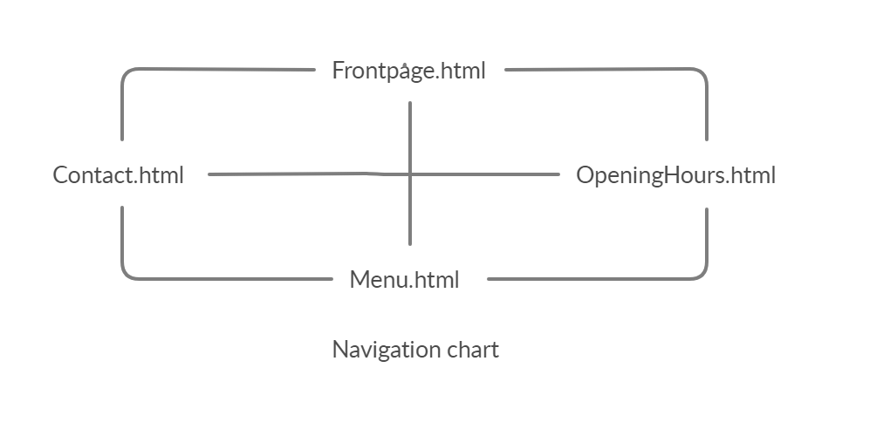
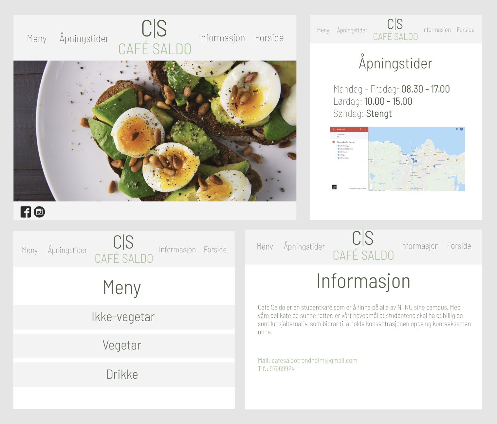
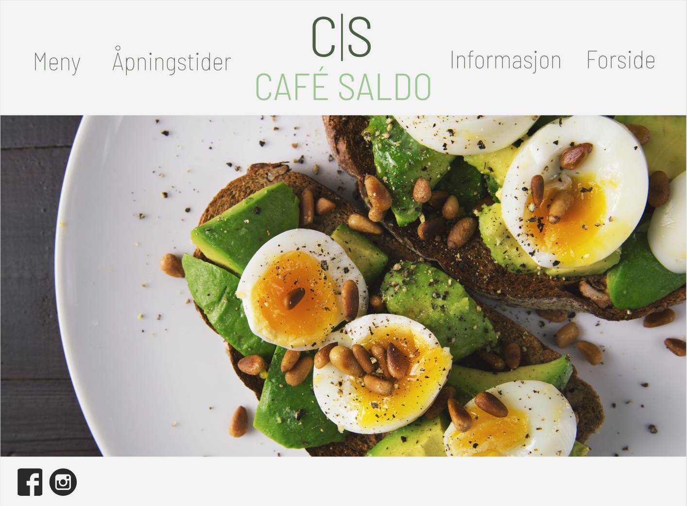
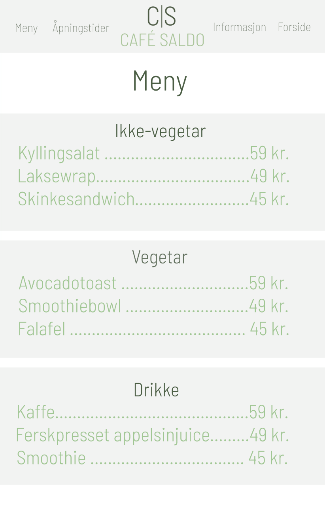
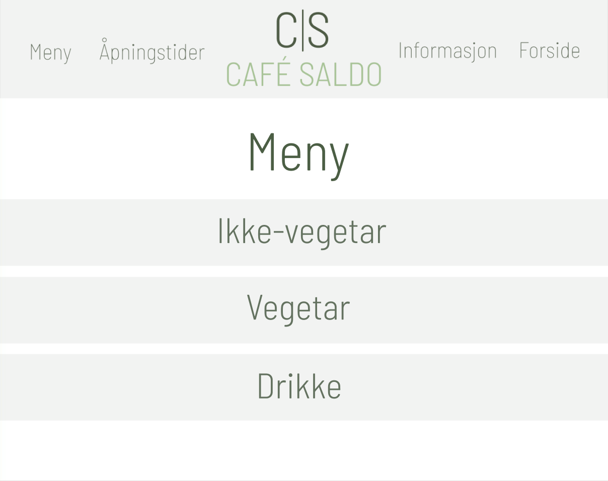
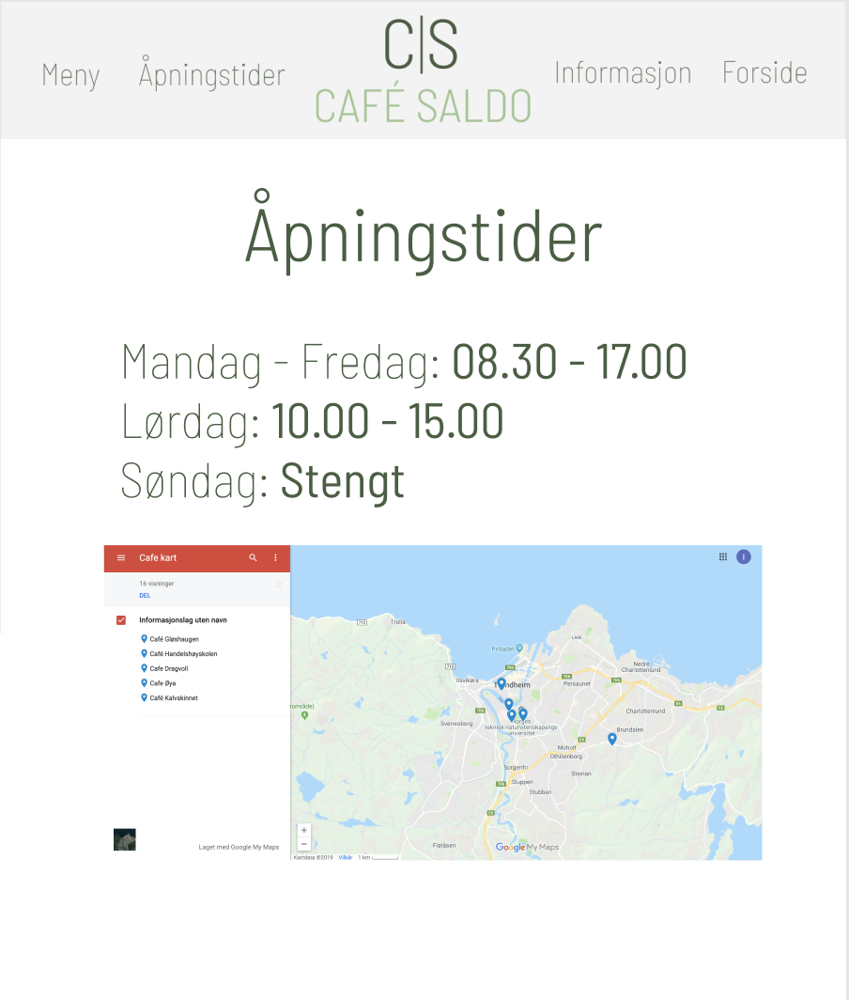
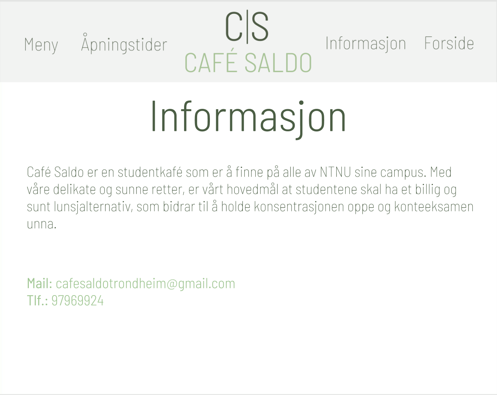

P2: Project Design
1. Document Details
Ola Fiske, Ingrid Flatjord, Hans Edvard Hafskolt, Jasmina Elizabeth Naseri og Synne Fuglesang Sæther
IT2805, 8.oktober 2019
2. Administrative Details
Client name: NTNU
Website Name: Café Saldo
Contact person: Svein Arne Hådi
3. Purpose, Goals and Audience
Café Saldo is a café for students in Trondheim and are located at NTNUs different campuses. The goal for the café is to make it easy for students to order and eat healthy and good food.The website’s purpose is to facilitate simple and healthy food to a reasonable price. Most of the food they provide consists of greens and are freshly made.
Café Saldo want a webpage to better communicate their service and tempt customers to try more of the different recipes. The main segment here is students, but the website and the concept are also designed for teachers and staff at the university. The target group would want to visit the website to get information about the different lunch-alternatives the café provides, such as gluten free lunches, lactose free and vegetarian alternatives. Visiting the website, visitors can see various offerings and information by navigating between pages through an intuitive menu.
4. Navigation Structure
To help the user navigate our the website of Cafe Saldo, we would like to implement a navigation bar that is fixed at the top of the page, and stay visible even if the user scroll down, although it gets a bit smaller in size when doing so. The reasoning behind this is that it makes the site very user friendly, and it will prevent the user from feeling like they get lost on the site. This easy-to-use, clean and sleek navigation bar is in line with the scandinavian design principles that the client want to utilize for their website, as it is synonymous with a healthy lifestyle.
5. Page Layout and Appearance
When we sat down to discuss how the page layout and the design should look like, we quickly agreed on several things. We wanted a simple, clean and bright design. The page layout need to be user-friendly so that it is easy for customers to navigate through the website. In the styling of the website, we wanted the colors to be simple and clean such as white and green. The website should have a clean and “fresh” look that underline the healthy theme of the café.
The stylistic choices we want to use on the website will be the following:
Details about the font:
- Font-family:
- "Barlow Semi Condenced"
- Fallback: "Arial"
- Font-size:
- Logo: The top of the logo (C|S) has size 144px and the bottom of the logo (CAFÉ SALDO) has size 96px.
- The four different options ("Meny", "Åpningstider", "Informasjon" and "Forside") will have font size 64px in the top bar. On their respective pages they will have font size 96px.
- The information in the contact-file will be 45px
- All other text on the website will have font size 64px.
- Font-color:
- The bottom of the logo will have colour #A0C693
- The top of the logo and all other text on the website will have colour #4B5E45.
Details about the background:
- The background on the page will be white.
- The background on the top bar and the courses on the menu will be rgba(196, 196, 196, 0.21)
Navigation bar:
The navigation bar will be located at the top of the website and when the user hovers over one of the navigation options the text will change to a brighter shade #A0C693, indicating that the user have selected that option. The background color for the navigation bar will be white, and the text will have the color #4B5E45 as mentioned above.
Links:
In the navigation bar at the top there will be clickable links to that goes to its intended destination, e.g if you click “Meny” you will get to the page that displays the menu, and so on. We will also place icons for facebook and instagram in the bottom left corner, so the customers can access our clients social media accounts from the website.
Logo:
The logo will be centered in the middle of the navigation bar. “Cafe Saldo” with its abbreviation C|S on top.

The pictures in the mockup are in different sizes. This because we want to show the whole webpage, also when the user scroll down.
6. Content
1. Front Page
The first that will meet the user, is the front page. This page consists of few elements, both because we want it to match the cafes design and theme, but also to make it user friendly. The users should not have a problem knowing where to click to get the information they are seeking.
The biggest element on the front page is the images. We want to show one image at a time. Each image will be shown in 3-5 seconds and will then fade out and a new image will be shown. We would like to have 3-4 different pictures that will be shown. When the last picture has visited the screen, the first picture will be shown again, and so on.
On top of the front page there will be a top bar. The top bar shows different alternatives that the user can click on to get more information, such as “Meny”, “Åpningstider”, “Informasjon” and “Forsiden”. In the middle of the top bar, the cafe's logo will be placed, as shown in the image below. The top bar sticks to the top of the page.
2. Menu
When the user clicks on the “Meny”-button on the top bar, the website changes and the menu will fill the screen. The menu will show the three different categories of food/drinks the café offers. The three categories are “Ikke-vegetar”, “Vegetar” and “Drikke”.
The navigation bar will still fill the top of the screen, with the same size as on the front page. This to make it easy for the user to go back or visit another page on the website.
When scrolling further down the page the navigation bar and its elements will scale slightly smaller to make more room for other content whilst still being visible at all times. Scrolling back to the top will bring the navigation bar back to initial size.
Under the top bar there will be a heading stating “Meny”. The font style and the font color will be the same as the top of the café logo. Under the header the different categories of food will be placed. The different options under each category will first be shown when the user click on the respective category. The user also has the possibility to close one category by clicking it again. The category name will then be shown without the belonging options. This applies to all categories and will make it appear clear and tidy for the user.
The menu consists of three categories:
 Ikke-vegetar
- Kyllingsalat
- Laksewrap
- Skinkesandwich
Vegetar
- Avocadotoast
- Smoothie bowl
- Falafel
Drikke
- Kaffe
- Ferskpresset appelsinjuice
- Smoothie
3. Opening Hours
This page will show the opening hours for the café (Monday to Sunday). The header will be “Åpningstider” and the font style and color will be the same as the top of the café logo. The opening hours will be placed high up on the page, so the user will see it immediately.
This page will also show a map that shows the user where to find the café. The map is directly connected to Google Maps, so the users can get more details if they click on the map.
Link to Google Maps
4. Information
This page consist of more text than the other pages. When clicking the information-button, the user can read about the café. The text will give information about the purpose of the café, what they provide and what they would like to achieve by providing this kind of food.
It is important to make sure that the page does not contain too much information. If there are too much to read, it is likely that the user don’t bother to read it. The text should be kept brief and informative.
The information page will also contain the cafes contact information. The email address and the phone number will be easy to find when the user opens the information page. The user should not have to look for this information.
7. Minimum Requirements
We will fulfill the minimum requirements of JavaScript applications in this way:
1. The front page changes the background pictures every 5 seconds to highlight different pictures from the café, the a bar holding menu elements should always be visible, also on the front page.
2. The different elements on the menu become visible if the menu-button is clicked. Each element corresponds to a category of courses. When the user click on the a category element, courses from this category will be visible. Clicking on the same category will hide these.
3. The top bar on the front page is pinned to the top of the page. Its size changes when the user scrolls down.
4. When users clicks on the email, the users mail/outlook will immediately open. The same for the map.
8. Plan
All of the files will be gathered inside a folder project which we will create later in the coding.
List of files and folders:
1. HTML
- frontpage.html
- menu.html
- information.html
- openinghours.html
2. Images
- frontpage1.png
- information.png
- menu1.png
- menu2.png
- navigationstructure.png
- openinghours.png
3. Modularity
- topbar.part
- course.part
4. Scripts
- topbar.js
- courses.js
- changingImages.js
- information.js
- frontpage.js
5. CSS
- styling.css
Work Division and Deadlines:
| Filename | Description | In charge | Deadline |
|---|---|---|---|
| frontpage.html | The front page of the website | Synne | 31.10.2019 |
| menu.html | The menu page that consist all the different food options | Ola | 31.10.2019 |
| information.html | Information about the café and the contact information. | Jasmina | 31.10.2019 |
| openinghours.html | Opening hours and a map | Hans | 31.10.2019 |
| frontpage1.png | Image shown on the front page | Ingrid | 31.10.2019 |
| topbar.js | Scaling the topbar menu when scrolling the page | All | 31.10.2019 |
| courses.js | Each course should be an element that is repeated. Clicking on one course should bring the description of this course forward and slide the other courses further down on the page. Clicking again should bring the courses menu back to initial state. | All | 31.10.2019 |
| frontpage.js | To define the behaviour of the front page | All | 31.10.2019 |
| information.js | To be able to use one click to use google maps position and mail address | Ingrid, Hans | 31.10.2019 |
| course.part | Course element should be standardized and reused for modularity. We do not know how to do modularity yet, but we saw the menu.part in the example delivery. | All | 31.10.2019 |
| topbar.part | All | 31.10.2019 | |
| style.css | With srections for the different pages, corresponding to the design created in figma and the descriptions and requirements. | All | 31.10.2019 |